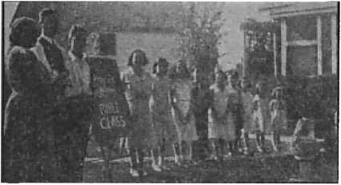
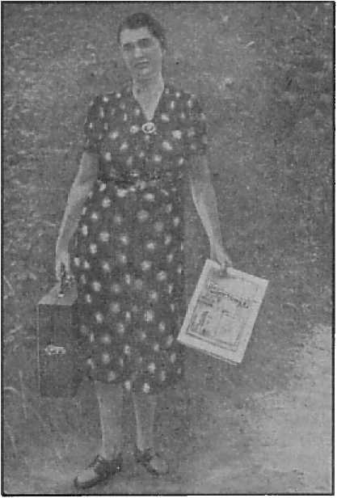
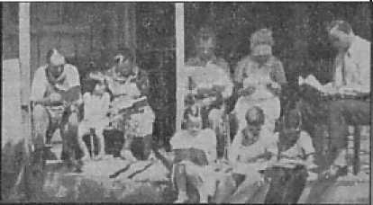

SAMPLE COPY
Testimony’of a modern-day Gamaliel
What do they mean?
z Must Be Protected by the Police Officers
Five Cent* a Copy Vol.'XXIli No. 589 • *1.25 In Canada and I Published Every
One Dollar a Year April 15, 1942 • Foreign Countries Other Wednesday
Contents
Acts of The Theocracy in New York State (1) 3
Boldness in the Day of Judgment
Evil Influence of a Vicious Press
Persecutions of Big and Little
The New Government
The Complaints (?) That Failed
“Profane Language” in Belleville
“Thy Word Is Truth”
Rights of Jehovah’s witnesses Must Be
Protected by the Police Officers
Under the Totalitarian Flag
Presenting “This Gospel of the Kingdom”
“The New Order” No Order at All
British Comment
Spain Fighting Alongside Germany
Churchill’s Denunciation of Hitler
Published every other Wednesday by
WATCHTOWER BIBLE AND TRACT SOCIETY, INC.
117 Adams St., Brooklyn, N. Y., U. S. A.
Editor Clayton J. Woodworth
Business Manager Nathan H. Knorr
Five Cents a Copy
$1 a year in the United States
$1.25 to Canada and all other countries
NOTICE TO SUBSCRIBERS
Remittances: For your own safety, remit by postal or express money order. When coin or currency is lost in the ordinary mails, there is no redress. Remittances from countries other than those named below may be made to the Brooklyn office, but only by International postal money order.
Receipt of a new or renewal subscription will be acknowledged only when requested. Notice of Expiration is sent with the journal one month before subscription expires. Please renew promptly to avoid loss of copies. Send change of address direct to us rather than to the post office. Your request should reach us at least two weeks before the date of issue with which it is to take effect. Send your old as well as the new address. Copies will not be forwarded by the post office to your new address unless extra postage is provided by you.
Published also in Afrikaans, Bohemian, Danish, Dutch, Finnish, French, German, Greek, Hungarian, Japanese, Norwegian, Polish, Portuguese, Spanish, Swedish, Ukrainian; also special Australian edition in English.
OFFICES FOR OTHER COUNTRIES
England 34 Craven Terrace, London, W. 2
Canada 40 Irwin Avenue, Toronto 5, Ontario
Australia 7 Beresford Road, Strathfield, N.S.W. South Africa 623 Boston House, Cape Town
Entered as second-class matter at Brooklyn, N. Y., under the Act of March 3, 1879.
From a Sermon of a Modern-Day Gamaliel ♦ John Haynes Holmes, in the Christian Century article previously referred to, has made an extensive study of the cases of mob violence against Jehovah’s witnesses for a period of a few weeks early last summer. This showed a list of 39 mob attacks in twenty states, from Wyoming in the west to Maine in the east, and from Wisconsin, and New York in the north to Texas in the south. Some of these attacks were savage to a degree. Men and women of various ages and conditions have been raided in their homes and meeting places, set upon by organized mobs, had their halls stoned and burned, their property destroyed, and have been held in jail often without bail or access to legal counsel.
In one instance, a group of nearly 100 witnesses, including children and one old woman 78 years of age, were lashed like cattle for ten miles down a railroad track in the blazing heat of midday, and left beyond the county line to fend for themselves as best they could. In Kennebunk, Maine, it was rumored that the witnesses had in their possession maps marking the location of bridges, public buildings, and other places, with a view to marching on Washington and starting a revolution. All the map really was was a map showing the houses one of the witnesses aimed to visit in his evangelistic work for distribution of tracts and gospels. A mob of hundreds of men and boys attacked the witnesses, looted and set fire to their building, and threatened a lynching. In the ensuing riot the witnesses appealed to the police for protection, which was not granted, and so, thoroughly alarmed, the witnesses forgot their own peace-loving convictions, got some firearms, and fired at the mob that, was advancing upon them. Two boys were wounded. This was unforgivable, and a black eye against the witnesses’ own non-resistant faith, but it can be readily understood when we remember the fright that must have been theirs as they saw a mob advancing to lynch them. [Extract from sermon of Dr. Dahlberg, of Syracuse, New York, quoted on pages 8 to 12.]
“And in His name shall the nations hope.”—Matthew 12:21, A.R.V.
Volume XXIII Brooklyn, N. Y., Wednesday, April 15, 1942 Number 5S9
(In Three Parts, Part 1)
TN RECORDING these “Acts of The -t Theocracy” a similarity between them and “The Abts of the Apostles” is noted. As the apostles were God’s witnesses and publishers of God’s kingdom, or The Theocracy, so Jehovah’s witnesses today, while not apostles such as the twelve, are nevertheless witnesses and Theocratic publishers. A comparison of the activities of Jehovah’s witnesses on earth at the present time, the methods employed in preaching the gospel, their reception and treatment by the people, shows that all bear a marked similarity to the acts and experiences of the apostles. The apostles and early disciples met with great opposition everywhere and endured much persecution at the hands of the clergy and priests of their day, who were the backers of a false theocracy in league with the powers of this world. An examination of a few of the physical facts in New York state alone relating to the work of Jehovah’s witnesses will clearly show them as standing in a position paralleling that of faithful Christians 1900 years ago, and additionally will identify a like class of persecutors of Jehovah’s servants now running rampant in the earth.
It was the acts of the apostles that distinguished them as servants of the Lord. It is the actions of His servants now on the earth that identify them as such; not words or empty claims. Unlike the religionists, Jehovah’s witnesses have real faith in the Lord’s Word and are ‘doers of it, not being hearers only’. They do not follow a course set down by tradition, but adhere closely to the Lord and take as an example the course of approved servants of the Lord who have preceded them.
The apostles, like Jesus, taught by visiting the people in their homes and in public places. Acts 20:20 shows the apostle Paul’s course: “I kept back nothing that was profitable unto you, but have shewed you, and have taught you publicly, and from house to house.”
Jehovah’s witnesses conscientiously visit the people at their homes to “comfort all that mourn”, and, so doing, experience a joy which is unsurpassed and beyond the comprehension of the “goats”. Some, having been ill-advised by their false shepherds, and being of a lawless disposition, commit violent assaults upon such Theocratic ministers. These assaulters have been so misinformed and blinded by their spiritual guardians that they think they do God service.—John 16: 2.
Boldness in the Day of Judgment
J. Lendin writes of an experience which he had in Brooklyn, New York. He says:
I had just started a doorstep setup on the second floor of a two-story home when the man said he knew the message, and butted in so continually that I began closing my phonograph, at the same time asking him if he knew religion was a snare and a racket, with the Hierarchy in the lead. Immediately he flew into a rage, grabbing an ax handle which he had hanging behind the door, apparently for that very purpose. I saw it coming down on my head. I grabbed his arm and held it, cautioning him. A slight tussle followed and he was pulled back by women folk. As I continued assembling my phonograph he again charged at me with the ax handle, madder than before. Determined to protect the Kingdom interests, I struggled with him for possession of the weapon. The struggle drew me partly into his home, where I noticed at least two husky men, apparently scared out of their wits. In a moment I had the man helpless and boldly stood in the doorway watching. Seeing no further attempts at an attack I picked up my property and continued out into the street. I continued witnessing in the same block, watched out of the windows of the home I had just so gladly left. In that block I made placements and received two promises of subscriptions if I would return the next week. I am sure I was protected by the holy angels.
Mrs. Robert M. Sherman, of New York state, narrates another incident:
One of Jehovah’s witnesses, a student of Nehemiah’s method of working with a trowel in one hand and a sword in the other, calls on a clergyman. Says the clergyman: “You take this Theocracy back to the Watchtower with my compliments. And tell me, if I should slap you in the face, what would you do?” Student of Nehemiah: “I’d turn the other side to you so you could slap it, and then I’d sock you between the eyes, as I didn’t serve under the United States flag four years for nothing! At least I learned the art of selfdefense.”
That is most typical of the fighting spirit of the clergy. If it had been a youngster or a woman who confronted him he might have taken some action. As it was, he put out a "feeler’, and, getting the foreboding answer above cited, ‘remained in his hole as a woman.’ It was just an idea, anyway. Jehovah’s witnesses are warriors for The Theocracy and will fight for their God-given and constitutionally-guaranteed rights to carry on the ministerial work com-mited to their care.
Newspapers have vied with each other in wholehearted co-operation with the clergy in misrepresenting the position and work of Jehovah’s witnesses. Reasonable persons, however, hear both sides of a case. Many are the instances where Jehovah’s servants have met with a chilly reception due to such misrepresentation, but upon explanation are welcomed and invited to return. A case in point is that of S. Petruszak, of New York, who writes:
A woman came to the door and, when she found out whom I represented, started to loudly denounce Jehovah’s witnesses for not saluting the flag; she had recently read in the papers about them; she would not give me a chance to explain. I offered her a Loyalty booklet to read, but she said, “I would not even want to look at it.” I asked her to show me the article in the paper. She then let me in and I helped hunt for it, but it could not be found. So I visited with the lady for an hour and she then let me explain why the witnesses do not salute the flag but have every respect for it. I told her that it had never been compulsory, but the enemy, looking for an issue, had seized on this to make trouble for the witnesses and that the newspapers had assisted in the misrepresentation. The lady said she now saw things in a different light, and took Salvation and three booklets, and I arranged for a back-call.
It will be noted that arrangements were made for a back-call. That is merely a return visit upon those who manifest interest in the message proclaimed by the witnesses, and is for the purpose of further instructing the people concerning the Scriptures. The apostles did likewise. “And some days after, Paul said unto Barnabas, Let us go again and visit our brethren in every city where we have preached the word of the Lord, and see how they do.” “And when they heard of the resurrection of the dead, some mocked: and- others said, We will hear thee again of this matter.”—Acts 15:36; 17:32.
Such return visits are a source of numerous surprises and unique experiences for the witnesses. Take for example the following incident reported by one of Jehovah’s witnesses:
Back-calls bring up strange memories. A number of years ago my mother attended a convention of the Good Templar’s lodge at Ballston Spa, New York. A lively youngster of a few years flitted up and down the aisle, quietly and unnoticed by most of the folks until suddenly the hall echoed with cries of “A little girl swallowed a penny!” The excitement was very great, what with doctors called in and helpless to do anything, advising this and that, and everyone afraid the child would die. The incident completely broke up the convention.
Last week my mother, who has since left worldly organizations and is in the service of the King, made a back-call on a lady who is partially deaf and partially blind. She seems very interested in the truth of God’s Word. During the course of the conversation she mentioned having been a Good Templar, and, upon hearing that my mother had likewise been a member, said to herself, “No, that was too long ago”; then to mother excitedly, “You couldn’t have been at. that convention in Ballston Spa, where the little girl swallowed the penny, could you?” “Certainly I was,” answered mother. “Well,” she said, “I was that little girl!”
While Jehovah’s witnesses are not pacifists, and will defend themselves, their brethren, and the goods used in performing the Kingdom service, their real warfare, and that in which they delight, is wielding “the sword of the spirit”—the truth they so earnestly proclaim. A publisher reports just such a duel with a “reverend” at a back-call. It was a pleasant suprise for the publisher, a surprise for the “minister”. It follows:
I made a back-call on an interested family, and while there the new minister called. He asked me if I was a Catholic or a Protestant; and when I stated that I was neither, he said I must be one or the other. I asked him if the Protestants teach that all the good go to heaven and all the bad to hell, and he said that was correct; if Jesus opened the way to heaven, and he said “Yes”. When I asked him where Abraham was, he said “In heaven”. Then I reminded him that he had just said Jesus was the first to go to heaven; and the reply was that it was a great mystery; furthermore he had not come to discuss the Bible, but to meet Mr. and Mrs. C.
I invited him to enjoy a Bible study with Mr. and Mrs. C and myself. He had no time. I asked him if there were ever any perfect creatures on earth; and when he had no answer, I named two: Adam and Jesus. He was surprised to hear it said that Adam was perfect; and said that God had created him (the preacher) and he was not perfect, and that Jesus as a man was not perfect. I explained to him something of the doctrine of the ransom, and he said at once, “Oh, you are one of those Jehovah’s witnesses.” After a few remarks about the books he had read and the books he had written, he arose and left. Mrs. C said to me, “My! How confused he was, and such a highly educated man, too!” She thought that the Lord had so arranged matters that we were brought face to face in her home. I feel the same way about it.
Why would a true minister call in his ministerial capacity if it were not for the purpose of discussing the Bible? Just to meet Mr. and Mrs.' C ? Certainly not to meet Mr. Witness! No dueling today, thank you! Why would he even call socially, if he was so busy and had no time? It’s little wonder the religion business is waning, what with such poor management. And it has so many mysteries ! It is noteworthy that after a few fest skirmishes, in which they were confounded and greatly embarrassed, the religious leaders of Jesus’ day would not discuss the Scriptures with Him. They adopted other tactics with Him. They use other tactics with His followers.
“Then came one and told them, saying, Behold, the men whom ye put in prison are standing in the temple, and teaching the people. Then went the captain with the officers, and brought them without violence: for they feared the people, lest they should have been stoned. And when they had brought them, they set them before the council: and the high priest asked them, saying, Did not we straitly command you that ye should not teach in this name? and, behold, ye have filled Jerusalem with your doctrine, and intend to bring this man’s blood upon us. Then Peter and the other apostles answered and said, We ought to obey God rather than men. The God of our fathers raised up Jesus, whom ye slew and hanged on a tree. Him hath God exalted with his right hand to be a Prince and a Saviour, for to give repentance to Israel, and forgiveness of sins. And we are his witnesses of these things; and so is also the [holy spirit], whom God hath given to them that obey him. When they heard that, they were cut to the heart [their susceptibilities were shocked!], and took counsel to slay them.”—Acts 5: 25-33.
The acts of the apostles were thus opposed. So likewise are the acts of the Theocratic publishers opposed at this end of the world, and such individuals have suffered persecutions which are unbelievable in this day of enlightenment. Their houses have been burned, halls ransacked, cars and other property destroyed; they have been tarred and feathered, castrated, and have suffered many other severe physical injuries. Courts have even ordered their children taken from them! Commenting on such widespread conditions in the United States in 1940 the American Civil Liberties Union said:
Popular hysteria was directed primarily not against them [totalitarian fifth columnists] but against the members of Jehovah’s witnesses, engaged in evangelical crusading on the streets and house-to-house all over the country. Beginning in May with the success of the Nazi armies in Europe, and running on into September, members of this religious sect were the victims of unprecedented mob violence in 335 communities in forty-four States. Over 1,600 members of the organization were forcibly interfered with, mobbed, tarred and feathered, or assaulted, with comparatively little restraint by local authorities. Most of these incidents were due to the popular assumption that Jehovah’s witnesses are somehow Nazi agents in disguise because they refuse on .religious grounds to salute the flag.
An account of some of these atrocities perpetrated upon Jehovah’s witnesses appears in a booklet published last year by the American Civil Liberties Union entitled “The Persecutions of Jehovah’s Witnesses”, and as you read therein it is difficult to remember the twentieth century is under discussion, not the Dark Ages when the Roman Catholic Hierarchy’s Inquisition was flourishing! The American Civil Liberties Union has befriended the witnesses many times in legal matters and rendered much service to the nation by its constant battling for the cause of freedom. Just as real Christians prove their love for Jehovah God, not by words but by obedience to His commands, so real Americans demonstrate their devotion to the flag by defending the principles for which it stands. Lawless anarchists who mob Jehovah’s witnesses, please take note! The contrast between real Americans and blustering professional flag-wavers is just as striking as that between true Christians and religious hypocrites.
Why do Jehovah’s witnesses continue on joyfully in this work regardless of persecutions? For the same reason the apbstles continued and rejoiced: because they were “counted worthy to suffer shame for His name”. As shown by the two following experiences, they “seek first the Kingdom’ and let the results rest in Jehovah’s hands.
From near Watertown, New York, two of Jehovah’s witnesses, Myron and Minnie Van Linder, submit the following report:
Three of our children, Lee (ten years of age), Merlyn (nine), and Nancy (seven), determined to obey God rather than man, and refused to take part in the flag ceremony at the beginning of the school year. The children presented the Loyalty booklet to the teacher, but she refused to read it. Then the trustee of District 8, Town of G. F., N. Y., called to inform us that there was agitation concerning their disobedience to the teacher in this matter, and that he was obligated to take some action at the request of the district.
The latter part of September the school superintendent, Mr. Gardener, called to inquire whether or not we compel the children to take this stand, and if they would be punished at home for saluting the flag. We assured him that we would not punish the children for saluting the flag, but we would not ask them to do something we ourselves could not conscientiously do.
The first of October the children were suspended from school with the provision that they could return in a week if they had decided to salute the flag. The children then attended a Kingdom School at the Syracuse Center for Jehovah’s witnesses until the 17th of November, when that school was moved to Watertown. Then we arranged for them to go to a neighboring district; but it was impractical to get them to and from school, and further difficulty arose concerning participating in Christmas exercises; so we deteririined to keep the children at home and do the best we could towards teaching them.
The truant officer called twice during January. He listened to the “Flag Salute” record and accepted the Loyalty booklet.
February second, Mr. Gardener, the school superintendent, and an official from the Department of Education at Albany, called. The official said that we were depriving our children of the privilege of education to which they were entitled, and that if we persisted it would be necessary to place them in foster homes where they would not be so deprived. We made it clear to him that we would remain firm for The Theocracy and that we could not teach our children to take a course that we believed to be a violation of the commandment of Almighty God. Then the official admitted that the enforcement of the Supreme Court ruling was at the discretion of the community, in this instance the responsibility of the trustee, Mr. Ives. The official inferred that some action would be taken immediately, and advised us to reconsider our position.
We made it clear to Mr. Ives that persecution or court action would not change our belief or our determination to be obedient to God; that if the District caused the children to be taken away from us, then the District must assume the responsibility before God and that the children would rely upon God to guide and protect them. Mr. Ives admitted that the District was not anxious to bring action, and finally agreed for the children to return to school Monday morning, February 10, 1941, with the provision that they were to leave the xoom during the flag ceremony.
The children are now getting along well in school, and we thank God for their stand and the strength to remain firm for The Theocracy.
Another experience showing faith in and unswerving devotion to The Theocracy comes from a publisher in Astoria, New York:
In order to support my family I am employed as superintendent of two apartment house buildings. I had this position for six years. On February 15, when I was delivering my rent collect receipts to my employers I was told my services were no longer required, due to many complaints about me. In reply I said, “I know the reason why this is taking place; it is because I am a Christian, and not because I have not done my work properly.” However, I told them I knew who the religionists were, and since they had arrived at that decision I decided to let them have some literature so that they could personally investigate what I believe. The next day I went out to look for a position, and obtained one in a hospital, and let my wife take care of the superintendent job until the end of the month.
During the time I held this position I witnessed to many of the tenants as the opportunity arose, and my son, who is about seven years of age, obtained a subscription for The Watchtower from one of the tenants. Three years ago, three of the tenants approached me and told me I was no good because I refused to salute the American flag, and said I should be taken out in a boat and dropped in the middle of the Atlantic ocean. I replied, “I suppose you would like to be the captain of the boat.”
From the time of February 14 to the 25th, the following took place: One morning I found three or four of the books at the bottom of the dumb waiter shaft, and I thought someone has taken their stand. Some of the tenants heard I was leaving, and immediately got up a petition protesting against my dismissal to my employer. One of these tenants takes all of the Watchtower literature as fast as it comes out. Another one of the tenants who was taking around the petition is the one who told me three years ago that I ought to be taken out in the ocean and drowned. While all this was going on my two portable phonographs and radio were stolen out of the back of my car which I parked behind the apartment. In the meantime I received a letter from my employers asking me to come and see them on the 25th of the month. To my surprise on my arrival there, my employers told me my case had been reconsidered and I was to stay on the job and continue as always.
During all this time I trusted in the Lord and knew He would work the matter out for my good. So I am still aiming at my sixty hours, and my wife and child and myself are determined more than ever before to witness on every occasion.
This shows how persecution of the Lord’s servants causes others of goodwill to manifest themselves. It was so in the days of the apostles.
“Then stood there up one in the council, a Pharisee, named Gamaliel, a doctor of the law, had in reputation among all the people, and commanded to put the apostles forth a little space; and said unto them, Ye men of Israel, take heed to yourselves what ye intend to do as touching these men. For before these days rose up Theudas, boasting himself to be somebody; to whom a number of men, about four hundred, joined tnemselves: who was slain; and all, as many as obeyed him, were scattered, and brought to nought. After this man, rose up Judas of Galilee, in the days of the taxing, and drew away much people after him: he also perished; and all, even as many as obeyed him, were dispersed. And now I say unto you, Refrain from these men, and let them alone: for if this counsel or this work be of men, it will come to nought: but if it be of God, ye cannot overthrow it; lest haply ye be found even to fight against God.”—Acts 5: 34-39.
At this time The Theocracy is passing through experiences somewhat similar to those of the early church, as set forth in The Acts of the Apostles, and it is of interest that in New York state, which is the subject of attention, there has arisen
The following noteworthy sermon was delivered by Edwin T. Dahlberg, D.D., pastor of the First Baptist church, Syracuse, New York, to his congregation in that city on Sunday evening, September 29, 1940. Jehovah’s witnesses and their companions will receive real joy in reading this sermon and with one accord appreciate these kind and courageous words.
What of Jehovah’s witnesses?
Daniel 3:18, “. . .be it known unto thee, O king, that we will not serve thy gods, nor worship the golden image which thou hast set up.”
A strange people have arisen in the world, known as Jehovah’s witnesses. Once they were known as Russellites. More recently they went under the name of the International Bible Students Association. But they have come more spectacularly into the public eye during the past four or five years under the vivid name, Jehovah’s witnesses.
You have probably met them. It is quite a common experience to have them come to your door, particularly on Sunday morning, if you are not at church,. and to find them handing you a tract or a book with the slogan, “Millions now living will never die.” Sometimes they will park a sound-truck outside your house, with a sermon issuing therefrom that can be heard all up and down the block. Then again they will have a small Victrola, and will ask you if you would like to have them play a record for you, which record is Usually a sermon by Judge Rutherford, head of the movement and successor to Dr. Russell. There is probably no religious movement in the world today which sends out so many millions of books, and carries on such a successful propaganda both by radio broadcasts and printing. I recall a year ago last spring, when I was in Los Angeles for the Northern Baptist Convention, seeing probably a couple hundred young people who were Jehovah’s witnesses, and who walked rapidly in twos, about a hundred feet between each pair and the next pair, all through the downtown district with big printed signs on their backs, advertising an auditorium meeting at which people were to hear Judge Rutherford broadcast from London. And this summer on our way west we saw any number of old Fords and jalopies, loaded with men, women, and children, on their way to the Jehovah’s witnesses convention in Detroit. You could tell who they were by the fact that they had Watchtower signs in their car windows, advertising one of their religious papers.
Who are these people, and what do they stand for?
Theologically, they declare themselves to be New Testament Christians, and so they are. They preach exactly what the early Christians preached eighteen hundred years ago: that the end of the world is at hand,, that Jesus is speedily coming back to earth, and that He will set up His Kingdom on earth and judge between the good and the bad. That is why they advertise so widely, “Millions now living will never die.” As John Haynes Holmes said in an article about them last July in The Christian Century, “There are no ifs, ands or buts about it. Jehovah’s witnesses read the New Testament text as infallible Scripture, believe it, and obey it.” The difference between them and us is that they take their religion seriously. It is not something just for the preacher to talk about on Sunday. It is something for every man, woman, and child to talk about on Sunday and the six days of the week in between. They talk to people on the streets, at the back door, the front door, and everywhere thejr can get anybody to listen. That is one reason they are spreading so rapidly. If anyone of us took his religion as much to heart as the witnesses do, we would have a world revival over night. We’ve got a lot to learn from them.
There are two things about Jehovah’s witnesses that have made them particularly obnoxious to a lot of people.
First of all, because they preach against religion. Now we think to be religious is one of the finest things we could do. Jehovah’s witnesses, on the contrary, hold religion to be the chief curse of the age. When they speak of religion they think of what they call religionists—Protestants, Catholics, anybody who goes through a system of ecclesiasti-cism and ceremony to find Christ. They believe priesthoods, great church buildings and organizations, masses, confessions, and what not, are anathema. That is why they are particularly hard on the Catholic church. They are terribly bitter against Catholicism. That is one of the main reasons they are persecuted as much as they are. Sift down the newspaper accounts as to the many riots in which Jehovah’s witnesses have been beaten up, and you will usually find somebody at the bottom of it by the name of Riley or Murphy or O’Connor. The witnesses preach relentlessly against the whole Roman Catholic hierarchy, and know no limit in their attack upon the Catholic clergy. But we Protestants come in for our share, too.
I remember a little old lady nearly eighty years old who used to come into my study in St. Paul with her satchel of books and pamphlets, which I often used to buy and read with great profit. She was the brightest little body. It made no difference how cold the weather, or how rainy and dreary the day. She would come in and sit down, open her Bible, explain a chapter or two for my benefit, and after we had kneeled and had prayer together, she would appeal to me earnestly, “Why don’t you leave the ministry? Why do you want to be a Pharisee, heading up a a great organized church like this when you ought to be out on the street, going from door to door with the gospel as did the Seventy of old?” I must say in all honesty that there have been few great convention gatherings, and few preachers, however eloquent, who ever smote my conscience like that little old lady could do, and I trust I am at least a little more humble as a follower of Jesus Christ because of her testimony. We do need less of ecclesiasticism, robes, cutaway coats, round collars, and tax-exempt church property, and more free, voluntary Christianity that goes from house to house with the blazing earnestness of the gospel.
What has brought Jehovah’s witnesses more violently into public attention in recent years, however, has been their stand on war and peace. They are absolute pacifists, and refuse to bear arms even in self-defense. Not only so, but they refuse to salute the flag, and teach their children in school to make the same refusal. One such case has been on trial in Syracuse during the past week, where an eight-year-old boy from Auburn, whose father is a former war veteran now turned Jehovah’s witness, has consistently refused to salute the flag when the other children have pledged their allegiance. The reason they do not salute the flag is not because they do not love their country. The father in this particular instance was wounded at the battle of Soissons in the World War, and has amply proved his devotion to the flag. The reason they refuse to salute the flag is because they believe it is only a symbol, and that to salute a symbol is the same as worshiping an image, which the Bible forbids us to do.
It is not simply the American flag that they will not salute. In Russia they will not salute the Communist flag. In Germany they will not salute the Nazi flag. In Italy they will not salute the Fascist flag. In short, they will not salute any flag of any country, because they believe it is the worship of imagery, and thus a prolific cause of idolatry and war. There are Jehovah’s witnesses in exile in Russia and in concentration camps in Germany, all because of this one issue, the refusal to engage in idolatry in any shape or form. It is important to get this clear, in order that we may not think of them as traitors, aliens, or subversive elements. Their position is inspired not at all by disloyalty to their country, but by what they believe to be loyalty to the Word of God, and to Jehovah, who said, “Thou shalt not make unto thee any graven image.”
The position of these people, whom most of their neighbors acknowledge to be sincere, godly people of the most upright and industrious character, is a particularly difficult one before the law. The United States Supreme Court has ruled that the public schools have a right to demand the salute to the flag, and that anyone refusing so to do is subject to penalty. Whatever the local penalty, therefore, and however conscientious the judge or the prisoner, both are bound by the law. Because this means such a conflict between church and state, and such a perplexing problem for earnest Christian people who believe in the freedom of conscience, we need to re-think our whole position on some of these matters. What are the limitations of religious freedom?
Personally, I believe Jehovah’s witnesses take an unduly strict view on the flag situation, and are making a big issue out of something that does not fall within the classification of idolatry or image-worship. On the other hand, we must remember that any number of great religious movements have started out with an objection to some very simple things. The Quakers, for instance, in their'early days in England, refused to take off their hats in the presence of the king. They contended that their hats could be removed only in the presence of God, their one and only sovereign.
The early Christians, in the days of the Roman Empire, refused to put a pinch of salt upon the altars of the Roman Emperor. That was all the Roman authorities demanded, just a little pinch of salt as an evidence of loyalty to their country. But the Christians insisted that the pinch of salt was a matter not of patriotism but of religion. If they made even this gesture they would be denying their sole allegiance, on earth as in heaven, to God and to His Christ. They went to their death rather than make this compromise. And so with Jehovah’s witnesses. They declare that their homage must be to God alone, and that to make an act of obeisance even to the flag of their native land is to compromise their religion.
What shall be our attitude toward these people who are fellow Christians, and who love the same Christ we do, even though their ideas are different? As Baptists we have a particularly great responsibility to answer this question, because historically we have stood for separation of church and state, and have done more than any other people to put into the constituted law of the land the guarantees of religious liberty and a free conscience. Our battle cry has always been, “We must obey God rather than men.”
In the first place, we should insist that all proceedings against Jehovah’s witnesses should be in accordance with American law and the processes of democracy, rather than by riot and mob rule. Our record as a nation in connection with the treatment of Jehovah’s witnesses is one that ought to make us truly ashamed. [Here read Notanda, page 2.]
It is this kind of mob rule, which has happened within a hundred miles of Syracuse, which we must firmly and patriotically withstand as inconsistent with the democratic processes of American law. We will be faithful to our commission as Baptists if we defend the historic rights of liberty and freedom in such a case, and invoke the duly constituted processes of government, as has been done in Syracuse.
But we may well do more. We need to reconsider the whole subject of religion and patriotism, and what are the weightier matters of the law. One of the speakers at our Onondaga Baptist Association, speaking of the Pharisees’ criticism of Jesus for healing a lame man on the Sabbath, used a striking phrase. He said the Pharisees were experts in the trivial—the minutiae of the law—the mint, anise, and cummin of religion—at the same time that they missed the big things of God. There is a great danger that in our patriotism we become experts in the trivial, rather than concerned about the great and tremendous aspects of oUr country. I don’t think our government stands or falls with the question of saluting the flag. When I was a boy we had no flag salutes in the schools, and I never heard of a pledge of allegiance, or taking our hats off when the flag went by in a parade. But we loved the flag profoundly, and loved our country with all eagerness. I think the proudest moment of my life was when my father gave me a McKinley button in 1898, when I was six years old—a button spangled with the stars and stripes of the American flag draped around the head of the president.
I don’t think we guarantee the safety of our country by one iota by demanding particular details of ritual, any more than we make people more religious by compelling them to kiss the cross, or kneeling before the Virgin Mary, or being baptized. Catholics are not one whit more loyal to Christ and the church because they go through all these outward motions. Neither are Americans one whit, more patriotic because they go through the outward motions of devotion. In fact, we may lessen patriotism by it. I always have loved to sing “The Star-Spangled Banner”. But my enthusiasm for it was dimmed somewhat when during the World War we had to stand up about every five minutes at the movies, or at some public meeting where some loud-mouthed super-patribt who had made most of his big pile in munitions while somebody else’s son was off to war, wrapped the flag around himself, and made everybody stand up while he bellowed apoplectically, “Oh, say, can you see by the dawn’s early light?”
We don’t make people love their country by marching them up to flag poles, jamming their hats down over their ears, and driving their children out of the public schools, any more than we make people Christians by waving the Bible around, thumping the pulpit, and sprinkling holy water on them. That’s the best way I know of to make infidels and public enemies. The reason my grandparents and parents left Sweden was because the government compelled them by law to baptize their babies, which was contrary to their faith and which they refused to do.
They that worship must worship Him in spirit and in truth. They that love their country must likewise do that in spirit and in truth. It will be a happy day for the world when all nations recognize that, and accept the spirit rather than the letter. If I were a teacher in the publie schools, arid there was one brave Christian boy or girl who believed that his first duty was to God and that therefore he could not bow to any outward sign, I would take a quiet, sensible view of it. I would say, “All right, son, you stand at attention while the rest are making the salute, or else go out into the hall for a moment, and kneel in prayer to God while we make the pledge of allegiance to the flag. Then you can come back when I call you, and work on your fractions.”
We can ill afford to lose from America the uncompromising little Daniels, who remain standing when all the rest of their countrymen are bowing down at the sound of the cornet, flute, harp, sackbut, psaltery, and all kinds of music. In a totalitarian world, where more and more we see people bowing to the state and to the state alone, let us rejoice that in America we still have some people who bow to God and to God alone. In a world of swastikas, hammers and sickles, and fasces, we are going to need that kind of people before our lives are done.
Truly this is a cup of cold water to the Lord’s little ones at this crucial time, and the Lord will not pass unrewarded this act of kindness. Let it be hoped that Dr. Dahlberg will see more than the injustices wrought against this group of sincere Christians, but also discern the issues involved. He speaks of them at the beginning saying, “A strange people have arisen in the world.” May he eventually see they are of the same body of people who served the Lord amidst great persecution in the days of the apostles and who are referred to as “a peculiar people”, called for the very purpose of showing forth the praises of the Almighty God.—1 Peter 2: 9.
Other Protestant ministers have from time to time defended the rights of Jehovah’s witnesses in the interests of freedom. This is not enough. They should go from the class of Gamaliels to that of witnesses, as were the apostles, in whose defense they speak. Be it noted that no Catholic, Protestant, or other religious organization suffers at the hands of mobs and lawless “law” officials; neither are they harassed, violently assaulted and otherwise persecuted “for His name’s sake”. The issue of world domination must be recognized—demon rule versus God’s rule. To champion freedom and religious tolerance is important; The Theocracy, all-important!
Just as the “Acts of The Theocracy” cause modern-day Gamaliels to manifest themselves, so others prominent in society are identified as opposers. Who are they ? Why do they fight against God and His work? They oppose Jehovah’s witnesses’ assembling in halls to worship; they object to their going from house to house. They don’t like the message, or the manner of proclaiming it. What would they have such witnesses of the Lord do ? What do they do ? What are some of the acts of the opposers of The Theocracy in New York state?
(To be continued)
The Long Beach Tax Levy
♦ Long Beach, Long Island, had its tax rate raised from $2.51 to $2.66, and all because it had a poor old adding machine that would add only six figures instead of at least eight, as it should. And so Louise and Adelina lost their jobs. It seems that Louise carried the millions of dollars in her head, while the hundreds of thousands of dollars were carefully and expertly added on the machine. And then Adelina carefully checked over the figures on the machine, and thought she had checked over the figures in Louise’s head, but she hadn’t. And the city fathers, being men, blamed the women. This wasn’t manly; it was masculine. There is a difference between being manly and being masculine. There are many persons strutting around who think they are men, but who are merely males.
RIGHTEOUS RULER
THE NEW ' government
The Complaints (?) That Failed
♦ While working our territory at Cohoes, N. Y., I witnessed at a home to a young woman who seemed friendly and listened to the record “Children”. The husband appeared in the doorway and said I had no right to do that work and he would have me arrested. I told him we were still in a free country and that it was my constitutional as well as my God-given right to do this work. He said he would call up the station and have me arrested. I said that was his privilege. As I was going out his wife informed me that he was an officer. But one who has the Lord’s spirit doesn’t scare so easily. I left a booklet Comfort All That Mourn on the table, so that they could look at it when I had gone. I kept on working down the block and across the street, and met a fine young Catholic woman who took the book Children.
Soon thereafter a car containing officers halted me, and the spokesman said he had so many complaints that he would have to take me to the precinct. I said, “No, you have just one complaint,” and pointed out the house from which I knew it had come. I asked him whether I was under arrest, to which he replied that I was not, but would have to come to the station for questioning. At the station the lieutenant was ready for me, shouting that I could not do that work there and would have to get out of town. They had enough churches in the town, said he. I informed him that I could not stop the work, but must obey God rather than man. I asked him to listen to the recording; but he had heard that before, he said, and then, after raving some more, told the officers to take me back to where they found me and see that I got out of town. I told him I was staying in town that night, and he said, of course, he could not stop me from staying overnight.
Theocracy publishers, New Orleans, La.
They took me back to the territory and I started right in working where I left off, though the officers said I would have to go back to headquarters if I did. After working a whole block with no answers, except one at the last call, they had me get into the car again and took me back to headquarters, although they were very apologetic about it. Then, at the police quarters I had a session with the chief and with a judge, both madly pacing back and forth and shouting at me, but evidently very nervous.
The judge said I ought not to be breaking the city ordinance, and that I was making it inconvenient for them. I said, “It is not my fault that I am here. You are also making it inconvenient for me. I was merely exercising my constitutional and God-given right, and the work would go on by others if not by me.” Finally they all left me, and I settled down to read. When they returned after about an hour they wondered at my composure, and an officer came to me all apologetic, saying he was sorry to have kept me, but that he could not find the man who had made the complaint. He thereby showed he had lied when he said there were many complaints.
He took me back to the territory and left me. there. After a few minutes I met with the witnesses who were work-
Joe, John, Ruth, Naomi, Esther, Samuel, Delight, Daniel, Christina, Charity, and Mercy, children of Armando and Josefa De La 0, of Michigan (all Theocracy publishers), all drove in one car and a handmade trailer to the convention in
St. Louis.
Jehovah’s Kingdom publishers, Nogales, Arizona
ing another part of the town. They had seen me picked up and had not expected me to get out of the clutches of that Roman stronghold so quickly. It was the Lord’s doing, and “marvellous in our eyes”. Such experiences strengthen one. —Helen Schieman, New York.
Putting the Screws on India
♦ Following standard political practice, the Roman Hierarchy puts the screws on the outside politicians, one after another, meantime really aiming at the center. The Catholic papers gleefully boast that (wholly as a result of their own pressure on the politicians) the books and papers of Jehovah’s witnesses have been banned in one country after another (Canada, Australia, New Zealand, and now India), “on the ground that they are subversive and contain sentiments prejudicial to the successful
A witness in the wilds of Kentucky (mother of nine little ones)
prosecution of the war.” Meanwhile, in England, Jehovah’s witnesses continue to carry on their work, simply because the Roman Hierarchy is not so successful there in hoodwinking the government with regard to them. But the Catholic press forever screams, “Subversive.”
“Profane Language” in Belleville
♦ Several Sundays ago I was out in the field working-with the phonograph, going from door to door. I stopped at a place, a little way out of the city of Belleville, Illinois, which appeared to be the office of a coal mine. I played a record for a gentleman, and after it was finished he asked me if we were the people who were arrested in Belleville with this literature. I replied that we were. He then said he wanted a copy of our literature with profane language in it and that was not fit to be sold on the streets. I told him that we did not have that kind of literature, that what we have is all taken out of the Bible and shows the fulfillment of God’s Word.
He then said that he had read in the newspaper where we have that kind of literature, but did not believe it, because he had read our literature previously, and he thought we were doing a fine work. He then contributed for a Watch tower and Consolation, showing that there are still some people of goodwill in Belleville who do not do everything that the demons in ‘ control of Belleville tell them to do.—Elmer Miller, Illinois.
Dirty Dig by Leicester Mail
♦ Geographical location does not make a man decent and honorable, and a yellow newspaperman is as yellow in England as in America or Australia. There is always a way of stating a truth so as to convey an evil impression. Note the effort made in the following squib in the Leicester, England, Mail (September 10, 1941) to arouse resentment instead of gratitude for a kindly and generous act:
Left by Witnesses
Jehovah’s Witnesses, who have just concluded a five days’ convention, had too much food. On Monday, when the Convention broke up, 150 4-lb. loaves were handed over to the Leicester Royal Infirmary.
One of the outdoor Model Study classes of the Grove, Oklahoma, company of 24 Kingdom publishers, which company was of that siae in less than one year after its formation
(To be continued')

THE book of The Revelation was written in sign or symbolic language, which was one means of concealing its meaning until God’s due time for it to be understood. The time for understanding has now come, and this is indicated by the words of chapter eleven, which read: ‘Thou, 0 Lord God Almighty, hast taken thy power and reigned; and the nations were angry, and thy wrath is come.’ In A.D. 1914 the events came to pass marking the beginning of fulfillment of this prophecy.
The twelfth chapter of Revelation opens with the statement: “And there appeared a great wonder [sign] in heaven; a woman clothed with the sun, and the moon under her feet, and upon her head a crown of twelve stars; and she being with child cried, travailing in birth, and pained to be delivered. And there appeared another wonder [sign] in heaven; and behold a great red dragon, having seven heads and ten horns, and seven crowns upon his heads.”
The two wonders or signs here mentioned are two great organizations, to wit, Jehovah God’s organization, pictured by the woman that gives birth to the man child; and Satan’s organization, pictured under the symbol of a great red dragon. The statement that these signs appeared “in heaven” means that those persons on earth who are earnestly and faithfully serving God are permitted to have an understanding of these things pertaining to the heavenly kingdom, or Theocracy.
The great truth that has held the attention of Christians for nineteen centuries has been the second coming of Christ and the setting up of His kingdom. That great event is pictured by the pure woman, representing God’s organization, and her giving birth to the man child, which is symbolic of the kingdom under Christ, which kingdom shall rule all the nations of the earth. God’s great organization embraces the righteous heavenly creatures and also those in the earth who are wholly devoted to Jehovah God. Note that the woman, which is God’s organization, is clothed and shod with the light of the sun, moon and stars. As these heavenly bodies give light to man on earth, even so the light of God shines upon those who love and serve Him; and this assures them of an understanding of divine prophecy, when it is fulfilled.
Christ Jesus was given the right to the Kingdom 1900 years ago; but, as stated to Him by Jehovah, at Psalm 110:1, He must wait until God’s due time for Him to begin His reign. The cries of the woman in the prophecy picture the prayers and supplications of those in harmony with God that His kingdom should be established on earth. The fact that God long ago promised He would bring forth a “seed” or offspring that wpuld rule the world is conclusive proof that in His due time that Seed must be born. The birth means the beginning of the Theocratic Government under Christ, pictured by the birth of the man child. The statement of the prophecy that the man child was born and caught up unto God and unto His throne shows that Jehovah acknowledges as His the kingdom which is under Christ and which shall rule and bless the earth.
Satan is also named the “old dragon”. That name signifies “devourer”. He has attempted to devour every one who honestly* serves God. He has a mighty organization composed of invisible creatures called ‘principalities, powers and wicked angels’; and the nations of this “present evil world” are under his influence and control, and therefore a part of his organization. (Luke 4: 5, 6) When Jesus was on earth Satan repeatedly tried to kill Him. At all times Satan has opposed God’s kingdom under Christ, and his agents or representatives have likewise opposed. Satan’s entire organization is against God and His kingdom, and hence his organization is pictured under the symbol of a great red or bloody dragon. The Scriptures show that Satan would be watching the time that the kingdom under Christ would begin to function, in order that he might destroy it. Therefore, says the prophecy of Revelation, Satan the Dragon stood before the woman to devour the man child as soon as it should be born.
Psalm 110 and other prophecies show that when God would send forth Christ to begin His reign the nations would become angry, because Satan would stir up a great war for world domination. These prophecies, together with the facts that came to pass, fixed the time as 1914, with the beginning of the World War. Up to that time Satan had his place in the realms of heaven, but with the beginning of the Theocratic Government under Christ Satan must be ousted from heaven. A great war in heaven followed. In proof of this it is written, in Revelation 12:7: “And there was war in heaven: Michael [official name of Christ Jesus] and his angels fought against the dragon; and the dragon fought and his angels.” In that fight the Devil was cast out of heaven. The two great signs in heaven, therefore, picture the two mighty opposing organizations gathering into action for war, and the result of that war for universal domination.
To be sure, there was much wickedness and crime before the world war of 1914. But since that time crime has been steadily on the increase. Why is this so? The war in heaven between Christ and Satan resulted in Satan and his angels’ being cast down from heaven to the earth; and since then he has been confining his operations to the vicinity of the earth. Even though Satan is invisible to human eyes, his works are seen by all men. He is the very embodiment of wickedness^ and his purpose is to plunge all creation into wickedness. It is to be expected, therefore, that Satan the Devil would cause as much trouble in earth as possible. In proof of this, Revelation 12:12 says: “Woe to the inhabiters of the earth, and of the sea! for the devil is come down unto you, having great wrath, because he knoweth that he hath but a short time.”
Satan and his organization must be ousted from the earth, and until that is done there cannot be peace and righteousness on earth. The next great act of Jesus Christ is to destroy Satan’s organization and his power. That means another great war between Satan and his cohorts on one side and Christ and His holy angels on the other side. That great war is described in Revelation chapter sixteen as “the battle of that great day of God Almighty”, or battle of “Armageddon”.
Satan knows there is but a short time before that battle is fought; hence he is bending every effort to turn creation against God, and to do this he attempts to drive them all into wickedness and then charge God with the responsibility for the sufferings on earth, as when the pope said that Almighty God had let loose this hurricane of the World War.
Armageddon, which will soon be fought, will completely wreck every wicked organization, invisible and visible. That battle will not be fought by ’communists and anarchists on one side against the established governments on the other side. It will be fought by Christ Jesus with His organization against all of Satan’s organization. The true followers of Christ on earth will have nothing to do with the fighting, but they do have a work to accomplish just before that great battle, which work of witnessing is now being done. The wise persons of good-will toward God are taking heed thereto and fleeing to God’s organization for refuge before Armageddon breaks.
THE Department of Justice knows that the Roman Catholic Hierarchy has, by its dupes, attempted to annihilate Jehovah’s witnesses by nation-wide violence.
Failing in this, the Hierarchy has placed great political pressure and foul boycott methods upon the “peace” officers in all the States, by misrepresentation of Jehovah’s witnesses, causing the officers to act as a “gestapo” by repeated arrests of Jehovah’s witnesses for preaching The Theocracy. The Hierarchy misrepresents and persecutes the true patriots, Jehovah’s witnesses, to detract attention from the Catholic priests who carry on their nation-wide secret fifthcolumn activity in America under the direction of the Nazis, so as to destroy America from the inside and the Outside.
To arouse the duped police from the snare into which they have been led by the demons in the state of Texas, that reasonable, fair and liberty-loving American public official Attorney General Biddle directed United States Attorney Clyde Eastus, of Texas, to deliver a speech by radio, constituting a warning to the police officers of Texas. The pertinent parts of the speech appear below:
My Friends:
I have been directed by the Honorable Francis Biddle, the attorney general of the United States, to deliver a series of radio speeches to the people of my district—the Northern District of Texas. My district is composed of 100 counties in the northern and northwestern part of Texas. There are approximately two million people in the Northern District of Texas.
The subjects on which I have been directed to speak are the rights and liberties and protection of the Jehovah’s witnesses. . . .
My friends, the Constitution of the United States, the greatest document ever written by the hand of man, states in substance that the people in this nation shall have the right to worship God according to the dictates of their own conscience; that they shall have the right to use the streets, highways, byways, and public buildings to preach the gospel of the Lord Jesus Christ. We have many denominations in this land. We have the Methodists, the Baptists, the Presbyterians, the Campbellites, the Lutherans, the Catholics, the Jews, and Jehovah’s witnesses, all of which are recognized legal religions. The Supreme Court of the United States has held that Jehovah’s witnesses is a legal religion, and they have a right to preach their religion anywhere in this land. Since that is true, they are entitled to preach it and teach it unmolested.
Within the last few months, as your United States attorney, I have had called to my attention a number of serious controversies between the Jehovah’s witnesses and various peace officers. These controversies appear to have arisen in the smaller cities in my district. There have been some serious controversies. There have been times when it would appear that a riot would take place. I know that the peace officers of my district are good, honest, law-abiding, patriotic officials, but it appears that they do not understand their duties. They seem to let their patriotism get the best of their better judgment. Some of these officers have permitted, in many instances, fist fights between citizens of their cities and Jehovah’s witnesses; and, instead of arresting the citizens who provoke the difficulty with the Jehovah’s witnesses, they have arrested the Jehovah’s witnesses, and incarcerated them, tried them and convicted them. . . .
Some of the peace officers, good men, are using harsh and improper methods of handling this situation. In many instances these officers have ordered Jehovah’s witnesses to leave town. . . .
There is a middle ground that you must take in the matter, of enforcing the law with reference to civil liberties. In the first place, we have a war on. Now, you may not know it, even though you are elected by the constituents of your community, and feel that you are only responsible to that constituency that elected you. Let me say to you that you are mistaken in this. The president of the United States is the commander in chief of the army and navy, under the .emergency, arid under the proclamations issued on the 7th and 8th of December, 1941, every man, woman and child in these United States became the servants under that great president. You city and state officers are, in fact, working under the president’s direction, since these proclamations were issued. It is as much your duty to assist in the enforcement of the federal laws, or any laws that have to do with or affect this national emergency, as it is to enforce your city ordinances and your state statutes. It is also your duty to protect the right of every citizen, white or black, foreign or American born. The Constitution of the United States gives every citizen, regardless of his color or race, regardless of his religion, the same protection. There shall be no discrimination, and I am saying to you, as the prosecuting officer of the United States Government for the Northern District of Texas,-that is the way it is going to be in this district. And, I believe, when you good officers really understand your duties toward the citizenship of this state, as well as your duty toward your government, that you will agree with me.
Now, my friends, I do not always agree with some of the teachings of some of the religions we have in this country, but I believe in a democracy. I believe in free speech. I believe that one has a right to worship God according to the dictates of his own conscience. I proscribe no man. I fall out with no man because he does not agree with me, because, as I say, we are living in a democracy where these things prevail, and that is what makes this government great; people have rights, and they must be protected.
Let us just think for a few moments about the time that was spent by those great men who wrote the Constitution of the United States, let’s just think about the long debates they had, about the various things that were finally written into that great document. I say, the greatest minds of all times were gathered in Constitution Hall in Philadelphia; months of discussion, months of criticism, months of thought, were had in that great gathering. Those great men were looking forward, they could visualize a great and glorious government, based upon justice and right, based upon fair play and based upon progress, based upon free speech and the right to worship God according to one’s own conscience; they anticipated the trouble that we are now having; they anticipated great wars, because in that great document the president of the United States was made the commander and chief of the army and navy.
Let me just quote from the preamble of that great document:
“We, the people of the United States, in order to form a more perfect union, establish justice, insure domestic tranquillity, provide for the common defense, promote the general welfare, and secure the blessings of liberty to ourselves and to our posterity, do ordain and establish this Constitution for the United States.”
What beautiful language! And if you will sit down and analyze those words just quoted, the preamble of that great document alone would be sufficient basis to say to you what I am saying, with reference to religious liberty and freedom of speech; but I have gone farther than that.
I have necessarily had to talk about national defense, loyalty, and patriotism, along with the Jehovah’s witnesses situation, because I think it dovetails together. One might think, “Well, why does he talk about these subjects together ?” But I say this, that you Jehovah’s witnesses have a right to speak on the streets of any city in Texas, on the sidewalks, in church houses, or buildings they rent. I say they have the right to do this unmolested by any chief of police, sheriff, deputy sheriff or any other peace officer. I say they have a right to knock on the doors and ring the doorbells of the citizenship, and have the right to pass out their literature—the Watchtower magazine. I say they have a right to play the phonograph record made by their former head, Judge Rutherford; all this unmolested. But I say to them, too, that wheri they enter one’s premises and they are ordered off, or they are told they do not want to hear their records, they do not want to hear anything you have to say, that you then become a trespasser, and are violating the law, and you should leave immediately. You have no right to force yourselves on any citizen. I say, you subject yourself to arrest ana prosecution. ... So long as you conduct yourself according to the laws of this land and the Constitution of the United States, you will receive at the hand of your government, and your United States attorney, full protection.
Now, you peace officers, you chiefs of police, you sheriffs, and your deputies, and the American Legion ... we have the finest organizations of American Legion boys in Texas that are in all this land—but you gentlemen are acting too hasty, you let your patriotism get the best of your judgment. You American Legion boys have been presenting the Jehovah’s witnesses with the American flag and have asked them to salute it, and they have refused to do it. This starts trouble. You should not do that. One of the beliefs of the Jehovah’s witnesses is that to salute the flag is worshiping an image. Please leave your flag at your Legion Post. If you do not want to hear the Jehovah’s witnesses, do not listen to them. No man should want to fight religion because he does not agree with it. The best way to handle the Jehovah’s witnesses, if you do not agree with them, is to not listen to them, and it would probably die a natural death, because if anything does not go and grow it cannot survive.
I want to say/this to you sheriffs and Chiefs of police, and your deputies, you make a mistake when you try to disrupt and interrupt the preachings and teachings and the handing out of the Watchtower magazine of the Jehovah’s witnesses. They have that right. You should ignore them, just as I have said to the American Legion boys, and other citizens; you do not have to listen to them.
I love the flag. I honor the flag. I know what it stands for, and I cannot conceive, so far as I am concerned, why any living man who would live in this great country would refuse to salute the emblem of this land. But the Supreme Court of the United States has said that the Jehovah’s witnesses is a legal religion. Part of their faith is not to salute the flag; and I will say that you ean take the old Bible and they have an argument that is some basis for their statement. I do not put that kind of construction on that part of the Bible that talks about ‘Thou shalt not worship false images’. I do not think it applies to the emblem of this great nation, but that is what they think about it and say about it, and again I say, this is a democracy. They have a right to believe that way, think that way, and say that way; and then, again, they say they do not believe in fighting for their country. They say the basis of this is that the. old Bible says, “Thou shalt not kill.” And there is some argument about that. I again say that I do not put the same construction on it, but, again, this is a democracy. They have a right to say and believe what they think, unmolested.
Now, we have what is known as the Civil Liberties Statutes, Sections 51 and 52 of Title 18, United States Code Annotated. These statutes provide substantially what I have stated, giving the rights to the Jehovah’s witnesses that I have stated. And they further say that if any person or officer interferes with their teachings and preachings, or their civil liberties, they shall be punished as in these statutes provided; and I might say to you, the American Legion, you+citizens and officers, did you know that every time one of these Jehovah’s witnesses is arrested, where he has committed no offense, legally, that the American Legion, the citizen or officers who do it are guilty of peonage, and that is punishable by a penitentiary sentence ? Now, you see, there is a middle ground that is suggested: that both you officers, American Legion and citizens, and the Jehovah’s are wrong, and there is a middle ground, and you have got to get on to it. There is no use having these petty quarrels. ... I am trying to act as a peacemaker; I am trying to show each of you what your rights are, and what is expected by your government; and I want you to go along with me, and let’s forget all these petty feelings, and get down to winning this war. We have got to win it I Let’s not wait until some bombs are dropped on San Francisco, New York, Washington, or some of our other cities. Let us cut out this foolishness and ehildplay and get down to doing something for your country and your fellow man, and get along as real Americans should.
I want you to know that is the way I feel about it, and I hope that you will go along with me, because I do not want to have to prosecute any Jehovah’s witnesses, and I do not want to have to prosecute any peace officers [for interfering with Jehovah’s witnesses], and for that reason I am making this radio speech in an effort to try to aid you, by your government.—Delivered by Mr. Eastus, February 22, 1942, over radio station WFAA, Dallas, Texas.
Seventeen days before Mr. Eastus’ talk, Francis Biddle, America’s attorney general, addressed the Brooklyn Bar Association on the same general theme. The Pittsburgh Press, February 6, 1942, contained the following report of the speech:
“My tough critics would doubtless be satisfied only if I interned all of the 1,100,000 enemy aliens in the United States. I have the power to do so, but I shall not. That would be profoundly unwise, let alone profoundly un-American.
“We have arrested and will continue to arrest the potentially dangerous and the disloyal. The rest we shall let alone and continue to absorb into our American family.
“In the course of the war, it is quite likely that groups of frustrated people, in an attempt to magnify their own importance or their own fears and prejudices, will take on the hood of the vigilantes.
“It makes little people feel bigger to decry a religious or racial group, to attack the Catholics or the Jews, or the Negroes or the Jehovah’s witnesses or some other minority. The Nazi way of life, insofar as it can penetrate our shores, will encourage such activities.
“Some such vigilantism is perhaps inevitable in a time of great national crisis; the strains and the stresses of war bring out the worst as well as the best in men. But it is worth while noting that equally inevitable is the retribution which awaits both the enemies without and the betrayers within our democracy.
“The Federal Government is well-prepared to deal with vigilantism. Within the Department of Justice, the civil rights section has fought and will continue to fight to defend the rights and liberties of all those entitled to the protection of our borders, citizens and aliens alike.”
Twenty-four years ago, in 1918, President Woodrow Wilson delivered a stinging rebuke to the men of small minds and even less morals who debased American democracy by taking the law into their own hands—for then, as today, there were outcroppings of vigilantism:
No man who loves America, no man who really cares for her fame and honor and character, or who is truly loyal to her institutions, can justify mob action while the courts of justice are open and the governments of the States and the nation are ready and able to do their duty.
We proudly claim to be the champions of democracy. If we really are, in deed and in truth, let us see to it that we do not discredit our own. I say plainly that every American who takes part in the action of a mob or gives it any sort of countenance is no true son of this democracy, but its betrayer. . . .
No truer or more appropriate words could be spoken in the great crisis which faces our democratic way of life today!
And there is today even less justification for a vigilante spirit than there might have been twenty-four years ago.
An Overstewed Pastor
♦ In the heart of dusky Harlem lives a pastor, “Reverend” Joseph Lowrey, Negro Baptist, who occasionally celebrates and gets overstewed. When this happened recently he cut his brother-in-law in the back and stretched him bleeding on the floor, locked his wife in a closet, and when detectives came for him he knocked both of them down. He has been arrested fourteen times previously in New York and other states, but there were' no convictions, because of the business in which he is engaged. He admits that the Devil gets in him when he is drunk. And he might be right at that. He should quit the racket in which he is engaged and go to work earning an honest living by the sweat of his brow.
Putting on 200 Pounds of Weight
♦ When a cute little whale is horn he may not be more than 30 feet long, of about the length of a good-sized house. But after a little he gets used to looking out for himself and puts on 200 pounds of weight per day until he gets to be 75 feet long. But he keeps on growing, if the whalers don’t catch him, until he is about 100 feet long, or the length of a city lot. At that time he weighs 300,000 pounds and provides humanity with about 27 tons of oil.
Whales Disappearing Rapidly
♦ At present rate of destruction all the whales will soon be gone. The catch for the season 1937-1938 was 54,664, and is reckoned to be at least four times what the oceans can endure. The Japanese eat whale meat, the Germans have used the fats in their margarines, and the Americans have used the fats for soaps. In recent years many whales have been killed by being cast upon sharp rocks.
How the Fish Got the Coat
♦ At Norfolk, Nebraska, a man hauled a big catfish out of the water. The hook came out. The fish started flopping. The man’s friend tried to hold it still by wrapping his coat around it. The fish flopped back into the water and took the' man’s coat with him. It is not fair to say he stole the coat. He came by it honestly. So the newspaper story that the fish stole the man’s coat is all wet.
The Rhinoderma Darwini
♦ The rhinoderma darwini has all the rest of the men beat to a standstill. It is his custom to carry the female’s eggs in his mouth while they are, hatching. The rhinoderma darwini, it should be explained, is a frog. The reason he is so very polite is that he is a frog, and, besides, he was brought up that way and he does not know any better.
A Misbehaved Eel
♦ In The Bronx, New York city, an eel three and a half inches in diameter tried the experiment of wedging himself into the $4,000,000 five-acre plant of the National Gypsum Company via their main service water pipe. He nearly stopped the operation of the plant for fourteen hours, but they finally found him and pushed him out of the place by an air pressure of forty pounds to the square inch. This particular eel probably had not been informed that the pipe line of a factory is no place for a thirty-six-inch eel to go nosing around in.
The Long Island Frost Fish
♦ The Long Island frost fish, which are cast up on the beaches in December and May, are really whitings, of excellent flavor, which get stranded on the sandy shores after chasing sand eels or baby bluefish. Nowhere else in the world are fish cast ashore in this manner. By treaty with Great Britain, about 1650, the American Indians had the right to all the frost fish thus cast on the beaches; but now it is the whites that catch and eat the fish.
Some Big Fish Stories
♦ After fights for life extending in each case to three hours or more a 166-pound swordfish was taken into the boat off Palo Verda, California, a 792-pound tuna was captured off Wedgeport, Nova Scotia (this time by a woman), and a record-breaking 927-pound tuna was taken in Ipswich Bay by Dr. John B. Vernaglia, of Medford, Massachusetts.
Underground River in Florida
♦ At Coral Gables^ Florida, an underground river, probably originating in Lake Okeechobee, flows into a canal and from that into the ocean, with the odd result that at the point of emergence both salt-water fish and fresh-water fish hobnob with one another.
Canadian Protestant League
♦ Some Canadian Protestants are waking up to the fact that ‘the harvest is practically ended and they are not saved’. They would not put it that way, but that is the way it was stated by the prophet, at Jeremiah 8: 20. They are waking up to find everything falling about their ears. The following are set forth as the League’s objectives.
(1) The Canadian Protestant League shall have as its chief objects the preservation, maintenance, and assertion of the traditional, civil, and religious liberties of British subjects.
(2) To this end the League acknowledges the Bible to be the divinely inspired record which God has given to us of His Son, Who is therein revealed as the one and only Sacrifice for sins, the one and only Saviour, the one and only Mediator between God and men, and the one and only Person to Whom universal authority in heaven and on earth has been given; and the League therefore acknowledges the Bible as being the supreme authority in religion; and in agreement therewith the League will endeavor to practise, defend, maintain, and propagate the great doctrines and principles of the Protestant Reformation.
(3) And all this in contradistinction to, and in defence against, the supreme authority, falsely claimed by the Roman Catholic Church; and also against the Roman Church’s political methods of propagating its tenets, and of extending and exercising this illegitimate authority.
One cannot but wonder, now that the dead Lapointe obeyed the clergy and falsely declared Jehovah’s witnesses a subversive organization, and thus to still the voice of truth in Canada, if some of these spurious children of God (Hebrews 12:8) will not discover, too late, that they rejected the voice of Jehovah when it could be heard, and now have nothing to look forward to except the destruction which they have invited by their acquiescence in deeds they knew were evil.
Sawdust as Fuel
♦ Somewhat akin to the mechanical stokers used for burning rice and buckwheat coal, there is now in use in Canada a device for the,burning of sawdust for home-heating purposes, and also for fueling stoves and kitchen ranges. The sawdust is fed by gravity direct to the grates, without the aid of mechanical appliances. Except in severe weather, it is necessary to fill the hopper but two or three times daily.
Vancouver, British Columbia, suffering from an epidemic of fleas (believed to have been caused from the use of sawdust as a fuel), was told by its health officer that a sure cure is to sprinkle Napthalene powder in the basement and close it tight for twenty-four hours.
[Not every invention is a good idea. At Wilkes-Barre, Pa., a lawyer and his entire family were killed by coal gas as a result of a coal stoker’s failure to operate as it should.]
Price Control in Canada
♦ In Canada, since November 16, 1941, businessmen may not sell at prices higher than the top prices charged in the four-week period of September 15 to October 11. Also, rents and service charges may not be increased; nor wages. But bonuses must be paid to compensate for advances in living costs. Goods may be sold freely at prices lower than those in effect in the period named.
Petain’s $2,400 Annually from Canada
♦ Old Mr. Petain, “the good marshal” so eager to collaborate with the Pacelli-Hitler conspiracy for a new “world order”, is quite well off financially, as might be expected. One of his investments in Canada brings him £600 annually. Canada still has diplomatic relations with the rump government Petain operates at Vichy.
UNDER
THE TOTALITARIAN
FLAG
Demoniac Founding of Montreal
♦ According to authorities, the founding of Montreal was brought about in a wholly supernatural way. A gentleman of moderate fortune, named Dauver-siere, living at La Fleche in Anjou, was directed by a mysterious inward voice to establish a hospital-convent on the island of Montreal, in the St. Lawrence; and about the same time a priest named John James Olier de Verneuil was also directed by an inward voice to send priests to the island of Montreal. It is said that neither knew anything about the place; particulars regarding New France were published every year by the Jesuits, but these men saw the island in visions.
At length they chanced to meet, knew each other at once, and understood their common designs. They formed a plan for establishing religious communities on the island, and for raising a colony to accompany them, and were soon joined by others, raised some money, and resolved to send out forty men to begin a settlement under Paul de Chomedey, who took charge in the same spirit of pious zeal which actuated the founders.
More associates were soon added to the company, many of them women of wealth, and another miracle supplied a leader for the nuns. Mademoiselle Jeanne Mance felt herself called to labor in Canada, and her spiritual advisor assured her that the call was divine. Chancing to go into a church at Rochelle, after she had determined to go, she met Dauversiere, when the two instantly knew each other and understood each other’s secret intentions, as had happened before with Dauversiere and Olier. Mademoiselle Mance went with Maisonneuve and his colony, in 1641, and in 1642 they laid the foundations of Montreal, which they called Villemarie— the town of Mary.—From A History of the French War; Struggles for Possession of a Continent; by Rossiter Johnson.
Pinning the Bug on a Priest
♦ A parish priest carrying the consecrated host to a sick person out of the town was killed by a flash of lightning, which accident being clearly against this pretended infallible power of the host, the people took the liberty to talk about it; but the clergy ordered a funeral sermon, to which the nobility and common people were invited by the common cryer. Every body expected a funeral sermon; but the preacher, taking for his text Judicum sibi mouducat, proved, that the priest killed by a flash of lightning, was certainly damned, and that his sudden death, while he had the consecrated host in his hands, was the reward of his wickedness; and that his death was to be looked upon as a miracle of the holy host, rather than an instance against the infinite power of it; for, said he, we have carefully searched and examined every thing; and have found that he was not a priest, and therefore had no authority to touch the host, nor administer the sacrament of the eucha-rist. And with this the murmur of the people ceased, and every body afterwards thought, that the sudden death of the priest was a manifest miracle by the host, and a visible punishment from heaven for his sacrilegious crimes.
The truth is, that the priest was ordained by the bishop of Taras'ona, in Aragon. The thing happened in the city of Catatayed, in the same kingdom; his name was Mossen Pedro Aquilar; he was buried in the church called the Sepulchre of our Lord. The reverend father Fombuena was the preacher, and I was one of the hearers.—Francis Gavin, former priest at Saragossa, Spain, in his book The Great Red Dragon, page 148.
(To be continued)
Ability to express oneself clearly | in speech is something very desirable and valuable, especially on matters of highest importance. Increasing numbers of persons today are coming to see and appreciate that the Good News of th'e Theocratic Government ; of Jehovah God by Christ Jesus < means more to the suffering human race now than any other thing on earth. Such ones are fired with a desire and urge to present this vital information to others, in the most effective manner possible. To give helpful instruction and practical hints to such ones as would publish God’s kingdom after the example of Christ himself, a series of articles, as above entitled, is here begun. Study and apply this instruction, I and note your improvement as a Kingdom publisher. ;
FOR those who would learn of Jehovah God and His purposes it is essential to study. Study, according to the dictionary, is the setting of the mind upon a subject to learn or investigate. It also means the act or process of acquiring by one’s own efforts knowledge of a particular subject. Those who approach the study of God’s Word with meekness and sincerity and diligently search the Scriptures have Jehovah’s promise of gaining the knowledge of God. (Proverbs 2:1-7) Claim this promise of the Lord, and then continue to increase in learning from Jehovah’s inexhaustible Word. To have the approval of Jehovah God, His servants must gain a knowledge of His will in all wisdom and spiritual understanding, walk worthy of the Lord, be fruitful of good works, and increase in the knowledge of God. (Colossians 1: 9,10; Proverbs 9:9) Progress, both in knowledge and service, is necessary for those running in this race.
Continual study and review, even in fundamental truths learned long ago, is required of those who would be proficient ministers and teachers. (Hebrews 2:1; 2 Peter 1:12,13) Some fall short in the performance of their commission because of failure to do this. “For ye ought to be teachers, seeing ye have been long in the doctrine. But now, ye need to learn again the first lines of the commencement of the oracles of God; and ye have need of milk, and not of strong food. For every one whose food is milk is unversed in the language of righteousness, because he is a child.” (Hebrews 5:12,13, Syriac Version) The following verse contrasts with such the mature ones, and shows the reason therefor: “But strong food belongeth to the mature who, being investigators, have trained their faculties to discriminate good and evil.” Note the admonition to be “investigators”. In other words, really study for yourself and “get down and dig”, not merely make a casual reading of the Bible or Bible helps, such as the Watchtower magazine. Do not say the table of the Lord is contemptible by indifferently or casually picking at the spiritual food placed thereon, but thoroughly consume and digest all instruction made available by the
Lord through His organization. This is not a lazy man’s job. “Much study is a weariness of the flesh,” but the Christian will endure this “hardness” as a good soldier of Christ just as he does the actual physical work and trials of preaching “this gospel of the Kingdom”.— Ecclesiastes 12:12; 2 Timothy 2: 3.
Why is such preparation and study so essential for Jehovah’s witnesses? “And the things that thou hast heard of me among many witnesses, the same commit thou to faithful men, who shall be able to teach others also.” (2 Timothy 2:2; Daniel 11:33) Jehovah’s witnesses and their companions are the only ones in the light. The world is in darkness. If those of the world are going to escape from such darkness they must be enlightened concerning God’s Word. The obligation is laid upon “faithful men” to teach others. Therefore all who would serve God and live must study to equip themselves to “be able to teach others” in their homes, at back-calls, model studies, Children book studies, Watchtower studies, or in whatever manner the Lord may open up. If one has a good sword in his hand but does not know how to wield it there is no purpose in having it. All should, be soldiers of the Lord—hardened, trained and well-fitted to carry these truths to others.
“Be ready always to give an answer to every man that asketh you a reason of the hope that is in you.” Also “know how ye ought to answer every man”. (1 Peter 3:15; Colossians 4:6) Jehovah’s witnesses bear the name of the Most High. They are His ambassadors in the world, representing His Theocratic Government. Their privilege is a blessed one; their responsibility is great. Jehovah has made provision for their training as workmen who need not be ashamed before any earthly creature, regardless of his exalted position among men. They are thoroughly furnished for all good works. (2 Timothy 2:15; 3:16,17) They are responsible for such provisions made available for them as Theocratic ambassadors. Study! and “make full proof of thy ministry”.
The Champion Book Reviewer
♦ Having reviewed 560 books in his pastorate in Seattle, L. Wendell Fifield, D.D., Litt.D., is now installed as pastor at the Plymouth Church of the Pilgrims, (Henry Ward Beecher’s old church) in Brooklyn, New York, and the signboards in front of the church contain advertisements of all the latest books. No doubt the gentleman does a good job at making these books seem interesting. Maybe after a bit he will get down to the Bible. This is not likely, but if he did, and should want to know anything about the Book, this is just a friendly suggestion that he should get Judge Rutherford’s 19 books and the 24 booklets shown between pages 288 and 289 of the book Children and start in and review them. He might thus learn something of the Holy Scriptures themselves, and help his audiences to learn something also; but as probably neither he nor any of his listeners have any real interest in salvation, it is not likely he will care for this suggestion.
Disgraceful Police Discrimination
♦ At the Lindbergh rally in’ New York city there were 12 lieutenants, 28 sergeants, and 415 patrolmen of the foot police. Of the mounted police there were 4 sergeants, 45 mounted police, 2 motorcycle sergeants, and 24 motorcycle men. Additionally, there was a large detail of detectives present both inside and outside of Madison Square Garden, where the rally was held. Now is a good time for someone to explain why such elaborate protection could be given to Lindbergh and his friends, and adequate police protection was absolutely refused to Judge Rutherford and-his friends two years previously in the same city and in the same auditorium, on the occasion of the delivery of the inspiring and important lecture entitled “Government and Peace”. Was it more important that the people should hear in safety Mr. Lindbergh’s criticisms of President Roosevelt than that they should hear in safety of peace, prosperity and everlasting life right here on earth?
Raymond Street Jail, Brooklyn
♦ A jail built seventy years ago at a time when practically no consideration was given to the humane handling of prisoners. A jail containing 400 cells— tiny cubicles all without windows, and with no master-lock system (fatal in case of fire) and with no open-air space or exercise yard. There is no dining hall or mess hall. Food is served in the cells. The jail is vermin-ridden despite the unremitting efforts of the Department of Correction. There is no real segregation of prisoners—18-year-old boys awaiting trial for misdemeanors mingle freely with hardened criminals. The jail is so. overcrowded that half of the 400 tiny, windowless cells are often used for two prisoners. It must be remembered that these prisoners are merely awaiting trial and that only 28 percent of them are ever found guilty.—Benjamin H. Namm, in New York Times.
Of all the large city jails in the United States Raymond Street jail in Brooklyn is one of the biggest disgraces; for it was an antiquated and unsanitary disgrace fifty years ago. In 1918 it had four kinds of bedbugs, lice, crabs and other vermin feeding on its victims there incarcerated. Said Judge Taylor: “An adequate and decently human modern jail is a necessity.” Said Judge Lebowitz: “Young boys, never before in trouble, and alleged murderers, old-time stir birds and morally depraved sex degenerates are all thrown together in that filthy stew pot. If the city can provide comfort stations with fancy facades, zoos and places for penguins to disport in, it can find money for a new jail.”
Time to Drop Court Nonsense
♦ Many will agree with Chief Magistrate Curran, of New York city, that the time has come to discontinue the antique “Hear ye, Hear ye, Hear ye; Oyez, Oyez, Oyez” at the opening of court. Those in the courtroom should be told to rise when the judge comes in, and then be seated, and no other ceremony required.
“No Way to Flee”
♦ The “Reverend” Doctor Bernard C. Clausen, of Pittsburgh, in an address in Binghamton, New York, indicated that he does not like the look of things in the world. He is reported as having said, in part:
Let us then prepare and get ready for the dark and tragic days; for there is only one way to escape, and that is to run with our tails between our legs.
It seems too bad to spoil that pretty picture; nevertheless a Scripture quotation is always in order, particularly if it fits like the paper on the wall. So hear the words of Jeremiah the prophet (25:35) that “the shepherds shall have no way to flee, nor the principal of the flock to escape”. They have all lied about Almighty God, and from this time forth it is inevitable that “a voice of the cry of the shepherds, and an howling of the principal of the flock, shall be heard: for the Lord hath spoiled their pasture. And the peaceable habitations are cut down, because of the fierce anger of the Lord”. —Jeremiah 25: 36, 37.
Three Pistol-bearing Guards
♦ In Brooklyn three courageous pistolbearing guards bravely climbed to the front seat of an armored truck and drove off down the street, bouncing bags of money off every time they hit a stone. After they had strewn seven sacks of wealth along the street, along the length of two blocks, the yells of the crowd behind caused, the pistol-toters to turn the car around and go back and pick up what they had dropped. Every sack was safely guarded by at least one honest American. The men driving the truck may never have thought of it, and probably didn't, but before driving a truckload of money through the streets it is good practice to lock the back door of the truck, so that the money won’t spill out and cause honest and intelligent people to lose their time watching it, and run the risk of being shot for doing what others were paid to do and didn’t.
“The New Order” No Order at All
♦ Dr. John T. Madden, dean of the School of Commerce, Accounts and Finance at New York University, in his annual report to the chancellor of the university, makes some observations which all intelligent persons will read with interest. He is not carried away with these new schemes and new schemers that are offering to do all the thinking and all the planning and all the bossing for all the rest of mankind henceforth now and forever. He said, in part:
In the process of time, the new order will be found to be no order at all. Communism, Nazism and totalitarianism all imply that the world was made and ruled by almighty man and not by Almighty God. A deep sense of humility is one of the first prerequisites of good citizenship. Without humility there is no respect, and without respect there can be no high estate of public morals.
Self-interest is the chief consideration of both individuals and pressure groups unless there is self-imposed respect for an authority superior to class or nation. In our own country there have recently emerged certain mob-minded tendencies. The delegation of powers and controls to administrative agencies whose rulings and decisions have the force of law and the power to deprive one of his property and property rights is malodorous and smells to heaven.
We need a spiritual rearmament and a spiritual re-education far more than military rearmament. In this we have our safest defense against mob-mind and mob-action. Perhaps this war may be worth its cost in ‘blood, sweat and tears’ if it will enable us to recover our spiritual unity.
We do not need an ambitious program of social reconstruction or an “ideal” order if we make personal liberty a direct object of government and if we assert and carry out the principle that the State which we created to serve us shall not become the master of its creator, if we do not sacrifice the individual to the community. ............------------------------------------ ■■ —----------------------
READ HOPE AND HAVE HOPE
FEAR
NCERTAINTY
DARKNESS now envelop all nations of earth. War and wickedness are destroying the hope of millions of people.
Is your hope, too, being lost? Do you desire a blessed hope of peace and security?
READ
The new, timely, comforting 64-page booklet HOPE. Published for the purpose of bringing to the people of good-will Scriptural instruction and knowledge as to how to obtain a true and lasting HOPE in a Righteous World.
This booklet is too valuable, to pass by. Order your copy TODAY, enclosing a contribution of 5c to aid in publishing additional Bible literature.
WATCHTOWER
117 Adams St.
Brooklyn, N. Y.
Herewith is my contribution to aid in the further publication of the booklet Hope. Please send to me........................copies of Hope. Enclosed find remittance of....................
(5c each) to be used in publishing more.
Name ...................................................................................................................................................
Street ...................................................................................................................................................
City
State
i By J. Hemery (London)
..................................................................
[Compiled, this issue, in America.—Ed.)
Spain Fighting Alongside Germany
♦ As was to be expected, Franco, having overthrown the Spanish Republic in the interests of the Pacelli-Hitler conspiracy for world dominion, has now thrown all the Spanish forces possible into this world war on the side of Hitler. In a note sent to all Spanish-American countries, but which note, owing to the influence of the Roman Catholic Hierarchy, has not been published in the United States, Franco stated that he had enlisted 90,000 Spaniards to fight alongside the Germans, Rumanians, Slovaks, Norwegians, Belgians, Netherlanders and French in the war against Russia. He styles the war against Russia a “holy war”. Papa, to whom he surrendered his sword after crushing the Spanish Republic, told him to say that. The enlisted fellow Catholics are “to defend Occidental Christian civilization”; they are “crusaders defending the civilization in which we live”. Thus have Britain and the United States been rewarded by Pacelli, Hitler and Franco for the efforts they have made to appease them.
Churchill’s Denunciation of Hitler
♦ Hitler is a monster of wickedness, insatiable in his lust for blood and plunder. Not content with having all Europe under his heel to terrorize into various forms of abject submission, he must now carry his work of butchery and desolation among the vast multitude of Russia and of Asia. The terrible military machine which we and the rest of the civilized world so foolishly, so supinely, so insensately, allowed the Nazi gangsters to build up, year by year, from almost nothing—this machine cannot stand idle lest it rust, or fall to pieces. It must be in continual motion, grinding up human lives and trampling down the homes and the rights of hundreds of millions of men. Moreover, it must be fed, not only with flesh, but with blood. So now this blood-thirsty guttersnipe must launch his mechanized armies upon new fields of slaughter, pillage and devastation. Poor as are the Russian peasants, workmen and soldiers, he must steal from them their daily bread. He must devour their harvests. He must rob them of the oil which drives their plows, and thus produce a famine without example in human history, and even the carnage and ruin which his victory, should he gain it—he has not gained it yet—will bring upon the Russian people, shall in itself be only a stepping-stone to the attempt to plunge the 400 or 500 millions who live in China and the 350 millions who live in India into that bottomless pit of human degradation over which the diabolic emblem of the Swastika flouts itself.
Where the People Can Read
♦ In the following list, showing the percentage of illiterates in each land, the countries in which the Roman Catholic Church has not recently controlled education are shown in Italic type. The list speaks for itself and is positive proof of what parochial-school education or instruction in religion will do to any land.
|
Bolivia |
84 |
Hungary |
15.2 |
|
Brazil |
75.5 |
Australia |
15.2 |
|
Portugal |
68 |
Belgium |
9.3 |
|
Colombia |
67.5 |
France |
8.2 |
|
Mexico |
62 |
United, States |
6.1 |
|
Porto Rico |
55 |
Canada |
5.1 |
|
Spain |
53.7 |
New Zealand |
4.17 |
|
Cuba |
52.4 |
Norway |
1. |
|
Chile |
49.7 |
Finland |
1. |
|
Nicaragua |
40 |
England and | |
|
Argentina |
37.9 |
Wales |
0.34 |
|
Costa Rica |
32.2 |
Netherlands |
0.23 |
|
Italy |
27 |
Germany |
0.03 |
|
Poland |
24 |
Switzerland |
0.01 |
Imaginary Catholic Statistics
♦ The following statement is specially significant in view of the fact that it is taken from a Roman Catholic magazine entitled Holy Roodlets, published in England in March, 1941:
A recent computation of the strength of the various religions of the world puts Catholicism at the head of the list with 398,277,000 members, though the 1941 Catholic Directory and Whitaker only give 366,185,084; but would it be blasphemy to wonder how the figure is arrived at? Ten years ago Catholics were supposed to number 334 millions: why, how, when did we suddenly leap to the fantastic figure of 400 millions? And who is the poet responsible for the leap? But our statisticians can beat poets into a cocked hat. During the last War, about 2,000 French priests were killed in battle. In 1925 the figure had risen to 12,000 in the Catholic press; and last year one of our Catholic papers raised it to 28,000. Statistics bear some resemblance to high finance, in that nobody is let to understand how either comes to its formidable figures.
“Branch of Catholic Action”
♦ In the. New York Times a column article set for the purposes of the “Sword of the Spirit” movement in Britain, which movement is sponsored by the Episcopalian archbishops of Canterbury and York, the Roman Catholic archbishop of Westminster, and the “Reverend” Walter H. Armstrong, moderator of the Free Church Federal Council. Under the headline used above the Times states that this organization is in effect “a branch of Catholic Action”, but that they do not like to talk about their future plans for a “new order” in Britain “because a major danger to their movement is that the Anglican and Free churches might pull out and leave the Catholics trying to carry on the burden. Although the Catholics are the most active in the movement, they believe that it is only by keeping a united church front that the movement will survive here.” The dispatch is from London.
The Bombs Disturbed Sara
♦ Sara is an elephant in the Dublin Zoo and she is allergic to bombs; they make her sick. She cannot understand why men should want such things. So when Dublin was being bombed recently she shook the two padlocks of the inner gate to her stall until they opened. Then she removed them. Then she pulled back the two bolts, one at the top and one at the bottom. Then she went through the same performance with the second gate. The third gate was fastened with a shackle. She unscrewed that. There was a fence. She stepped over that without damaging it. Then she tried to hide in some bulrushes on the edge of a lake, thinking correctly that that was not a military objective and therefore reasonably safe. She was right. After a little while the superintendent of the zoo came to her and said, “What are you doing here, Sara?” and she got up and came home.
Says London Cavalcade
♦ Says London Cavalcade about Joseph Patrick Kennedy, one-time Papal ambassador to Britain on Uncle Sam’s pay roll: When word reached New York that Kennedy was talking to businessmen and Hollywood executives about the “inevitability” of a Hitler triumph, members of the William Allen White (“Aid Britain”) Committee became irate. They framed a scorching open letter to the President. It said that the committee had gone all along with the President, but that they could not continue if he kept Kennedy in his official family. It then demanded Kennedy’s prompt dismissal without any “Dear Joe” letter. The open letter was being circulated to get prominent persons’ signatures preparatory to publication when Harry Hopkins (just left London) chanced to see it in New York. He phoned Roosevelt. The President wired Kennedy. The latter came to Washington, and his long-predieted resignation was quickly announced.
Perhaps London Cavalcade is beginning to see that there is a religious reason for the pro-Axis sympathies of such men.
Just Like American Statesmen
♦ Indicative of the free and mighty attitude taken by the English, and the masterful manner in which they have set themselves up as the sole rulers of a new subject nation, is the $32,000 liquor and food bill which the British purchasing mission has run up at an exclusive Washington hotel and charged to the United States. The visitors shrug off the bill by declaring that it is part of the American program of aid to England, that they cannot do business here unless they are able to entertain American industrial leaders from whom they are purchasing supplies with American loaned money. Naturally, official Washington denies the story, but we checked into it until we secured confirmation from undeniably authoritative sources. —W. G. W., in the Fort Lauderdale, Florida, Daily News, September 3, 1941.
Business as Usual
♦ It gets the common people much upset mentally when they learn, as from the London Financial News, March 26, 1941, edited by Winston Churchill’s private secretary, that at that late date millions of dollars in profits from British war industries were still flowing out of Britain to investors in Nazi Germany. The money passes through the Bank of International Settlements, Basle, Switzerland. The international bankers that organized that bank put into its charter the provision that the' bank was to be free from all interference in times of peace or of war. So it is quite easy, for anybody who has the money, to invest in the war industries of all the warring countries, and get dividends regularly.
Four-Fifths Are at War
♦ The National Geographic Society takes note of the fact that 1,700,000,000 people, four-fifths of the world’s population, are at war. Practically all of Europe, Asia and Africa are involved, and considerable of the Western Hemisphere as well.
Patient Witnessing in Glasgow
♦ After placing the book Religion with a deaf-and-dumb lady I arranged for a Model Study by writing on a slip of paper, “Would you like a Bible study in your own home ?” The lady delightedly nodded her head, and a week later I called back and was greeted with a great smile of welcome. I showed her the Model Study booklet No. 2, getting her to read the page, “How to Conduct a Model Study.” After reading she smiled, to show she understood. I pointed out to her the first question and answer, later getting her to find and read the Bible quotations and book references. At the end of an hour the lady told me, through the medium of her writing pad, how much she had enjoyed the study, and now another Jonadab under a great handicap takes her stand for The Theocracy.
Requiescat in Pace
♦ While the League of Nations was technically alive, and while Russia and Poland were members in good and regular standing, Russia walked in and took half of Poland’s territory; the other half went to another thief. In the case of Danzig, directly in the care of the League itself, the League disowned its own child and refused, after its seizure by Hitler, to pay its own high commissioner.
When Uncle Sam saw that the League was slipping, and about to fold up, he took four long weary months to acknowledge a note from it and to say in reply that he regards the technical non-politi-cal activities of the League “as a step toward the establishment of that national and international order which it believes is essential to real peace”. That is right, Uncle, always speak kindly of the dead.
Long Hours Reduce Output
♦ Labor claims that in British munition factories it has been proved that long hours result in reduced output, increased accidents, increased illness, and that the. same thing was proved in the same factories in World Mar I.
“YE ARE MY WITNESSES”
The wonderful truths of Bible prophecy are now being revealed, making clear the issue of paramount importance, “W'*RLB BO All A AT I ON” Who shall rule?
What will be the results?
Read THE WATCHTOWER!
APRIL 1-30
CLIMAXES THE THREE-MONTH WATCHTOWER
CAMPAIGN
featuring the premium offer, namely, instructive, 384-page book
and
the newly released
64-page publication
GIVEN FREE with a year’s subscription
You need this magazine. Use the coupon below. f°r Last month of premium offer—act now.
WATCHTOWER 117 Adams St. Brooklyn, N. Y.
I am enclosing a $1.00 contribution for a year’s subscription for The 'Watchtower. Also please send to me postpaid the book Children and booklet Hope.
Name .........................................................................................................................................
Street .........................................................................................................................................
City................................................................................................................................................ 16-page magazine
Semimonthly
State ............................................................................................................................................. $1.00 for
one year
32
CONSOLATION